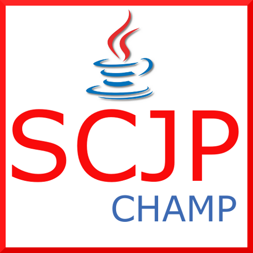
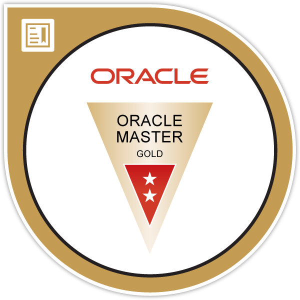
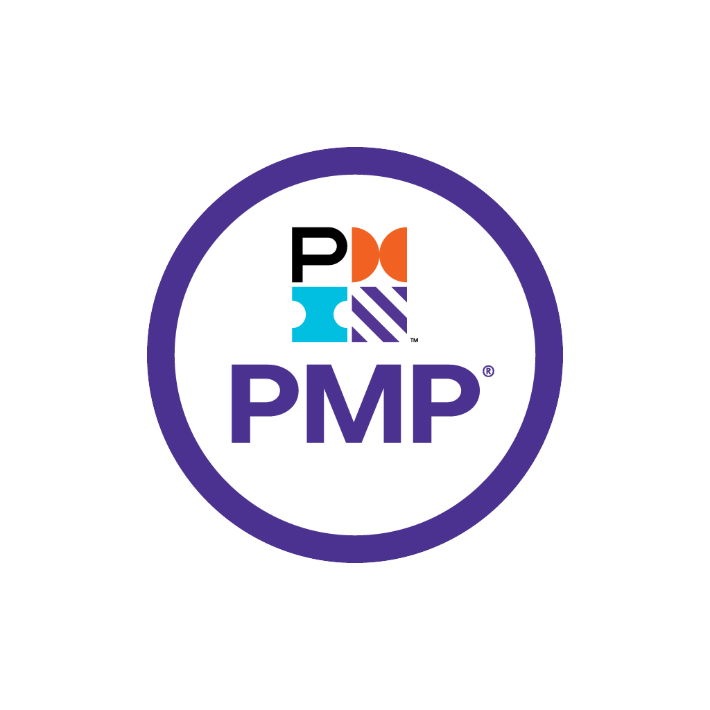

Summary
はじめまして。 Progect Managerとして活躍してきたジョン・ドンウと申します ユーザーが真に求めるものを創造することに情熱を注ぎ、プロジェクトの目的やビジネス価値を深く理解しているPMです。 リーンスタートアップ(Lean Startup)や アジャイル(Agile) といった 迅速かつ革新的な方法論を活用しています。
Education
大学在籍期間が長かったのは、兵役義務を果たしたためです。
| 就学期間 | 学校 | 学部 | 専攻・修士・他 |
|---|---|---|---|
| 2001年03月 ～ 2008年02月 | 釜山慶星大学（韓国） | 産業工學科 | 統計學 |
| 2002年08月 ～ 2004年09月 | 海兵隊（兵役） | 兵932期 | |
| 2008年03月～2009年01月 | 中央日報ITEA釜山アカデミー | Enterprise Java Developer養成課程修了 | JAVA,日本語 |
| 2009年02月～2010年08月 | 日本留学 |
Work History
Project
開発に関連するプロジェクトが記載されています。
詳細については、「Click Here」をクリックしてください。
| プロジェクト名 | 説明 | 開発期間 | 詳細情報 |
|---|---|---|---|
| AI研究所 |
[株式会社アイル] AWSを利用したChatBot(ver.1) + 自社開発ChatBot(Ver.2) + 商品分類システム
#AI #Machine Learning #ChatBot
#AWS lex #AWS lambda #AWS opensearch
#Fasttext #Bert
AWS
Python
Ruby
JavaScript ES6
HTML5 and CSS3
Bootstrap 4
Node.js
PostgreSQL
Vscode
GitLab
|
( 2021/01 ~ 現在 )
企画・研究
|
click here! |
| 顧客統合管理 |
[株式会社アイル]顧客統合管理システムの運用・再開発
#顧客管理システム #営業部 #再開発
Ruby
JavaScript ES6
HTML5 and CSS3
Bootstrap 4
Node.js
PostgreSQL
Vscode
Docker
GitLab
|
( 2019/06 ~ 現在 )
PM・設計
|
|
| BackYard |
[株式会社アイル]BackYard開発
#ネットショッピングモール #在庫管理 #商品統合管理 #Amazon #Rakuten #Yahoo
Ruby
Vue
Bootstrap 4
PostgreSQL
Vscode
GitLab
|
( 2018/04 ~ 2019/05 )
バックエンド
|
外部サービス導入 |
[株式会社クルーグ]AWS Speech To Text, NaturalLanguageClassifier, asterisk導入
#AI #AWS STS #IBM NaturalLanguageClassifier #asterisk
PHP
Asterisk
AWS STS
NaturalLanguageClassifier
HTML5 and CSS3
NetBean
PostgreSQL
GitLab
|
( 2017/09 ~ 2018/03 )
Fullstack
|
| Asteriskダッシュボード |
[株式会社クルーグ]Asteriskのダッシュボード再開発
#Asterisk #Dashboard #PHP #Cakephp2 #開発ルール #React
PHP
React
NetBean
PostgreSQL
GitLab
|
( 2017/04 ~ 2017/08 )
設計・バックエンド
|
|
| 全国パチンコ・パチスロ機種管理 |
[Hmsolution]全国のパチンコ・パチスロ店舗における機種情報の統合管理
#パチンコ・パチスロ店舗 #パチンコ・パチスロ機種
PHP
JavaScript ES6
HTML5 and CSS3
JQuery
MySQL
NetBean
GitLab
|
( 2014/12 ~ 2015/05 )
Fullstack
|
|
| クライアント案件の開発 |
[Hmsolution]不動産HP + 動物病院HP + リサイクルナビHP
#不動産HP #動物病院HP #リサイクルナビHP #HP開発
PHP
JavaScript ES6
HTML5 and CSS3
Bootstrap 4
NetBeans
MySQL
GitLab
|
( 2015/06 ~ 2017/02 )
Fullstack
|
|
| 社内システムエンジニア |
[株式会社ポットマック]社内プログラムデータの管理
#ポットマック #ネットワーク #社内SE
Java
JavaScript
MySQL
Mattermost
|
( 2019/10 ~ 2020/10 )
社内SE
|
|
| アプリケーション開発 |
[株式会社清心IT]メッセージングアプリ開発
#メッセージングアプリ #アプリ開発
Objective-C
JavaScript ES6
HTML5 and CSS3
X-code
Oracle Server
GitLab
|
( 2013/01 ~ 2013/12 )
Application
|
|
| システム運用 |
[株式会社清心IT]グループERP、人事システム運用
#ERP #人事システム
VB.net
JavaScript ES6
HTML5 and CSS3
NetBeans
Oracle Server
GitLab
|
( 2010/09 ~ 2013/01 )
Application
|
プロジェクトは最近開発された順に並べ替えられています
Stacks
新技術に対する強い関心を持ち、プロジェクトに求められるスキルを迅速に習得する能力と意欲があります。
| 技術名 | ロゴ | 活用内容 | 評価 |
|---|---|---|---|
| Ruby |
|
Ruby on Railsをベースに開発ができます。 また、JQueryやJavaScriptを活用した画面端からバックアンドまでFull Stackの開発を担当しています。 現在は設計を主な担当としています。 | |
| PHP |
|
PHPはCakePHP、FuelPHPで開発ができます。 また、JQueryやJavaScriptを活用した画面端からバックアンドまでFull Stackの開発を担当しています。 | |
| Python |
|
PythonでTensorFlow、Keras、Numpyなどで研究しました。 現在は自然言語処理などを研究しました。 | |
| MySQL |

|
リレーショナルデータベースを設計し チューニングなどを開発しました。 | |
| PostgreSQL |

|
リレーショナルデータベースを設計し Big Data用チューニングなどを開発しました。 | |
| GitLab |
|
GitLabを活用してコード管理および全体プロジェクト管理に行えます。 | |
| AWS |
|
ChatBotを開発に必要なGoogle lux・lambda・opensearchを活用をしました。 | |
| Notion |
|
Notionを活用して文書の作成および作業の体系化を通じて優先順位を効果的に設定することができます。 | |
| Chatwork |

|
Chatworkを活用して他の部署との連携や意思決定に関するコミュニケーションを行えます。 | |
| Slack |
|
Slackを活用して他の部署との連携や意思決定に関するコミュニケーションを行えます。 | |
| Mattermost |
|
Slackを活用して、コミュニケーションを行えます。 | |
| Teams |

|
Teamsを活用して ビデオ会議やメンバー面談なのに行えます。 | |
| Zoom |
|
Zoomを活用して 他の会社とのビデオ会議に行えます。 |
客観的に表現することが困難であるため、私が把握し実施可能な範囲で記述しました。
Front End
JavaScriptを最も多く使用しており、最も自信のある言語です。 特にVueに興味があります。
Back end
Ruby,PHPをよく利用しています。Ruby on Rails、CakePHP、FuelPHP などフレームワークを活用しています。最近はPythonに興味があります。
Data base
PostgreSQLをよく利用、MySQLも利用しています。 最近はAIに活用ができるチューニングに興味があります。
Utilities
Notion, Slack, Teams, Zoom, GitLab, Redmine など利用しています。仕事で役立つプログラムであれば、積極的に活用するほうです。
Certification
現状に満足せず、新しい技術への挑戦を続けています。

SCJP(Sun Certified Java Programmer)
2008.06
Oracleが認証しているJAVA資格試験
応用情報処理技師(Engineer Information Processing)
2008.12
韓国で取得した応用情報処理技術者資格

Oracle Master Gold 10g
2009.02
Oracleが認証しているデータベース認定試験

Project Management Professional (PMP)®
2024.04
PMI本部が認定しているPMの国際資格
Contact
ここまで読んでくださってありがとうございます。
一期一会の機会を心から大切にし、貴社と共に成長し、新たな価値を創造できるよう努めます。
JEONG DONG WOO
Progect Manager
- Position : Progect Manager
- Email : woo2462@hotmail.com
- Phone : 080-5779-2684
- Address : 神戸市東灘区御影山手２丁目8-14
If you want to live a happy life,
tie it to a goal, not to people or things